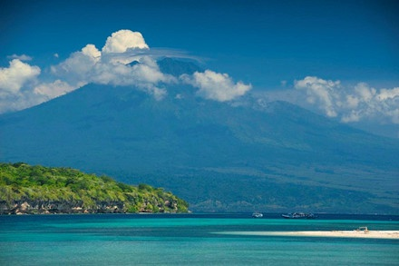

Pemuteran - Indonesia
Nằm về phía tây bắc của đảo Bali, Pemuteran là một trong những nơi tuyệt đẹp nhưng rất ít du khách biết đến.
Pemuteran vốn là một làng chài nhỏ ven biển. Trải qua quá trình phát triển lâu dài, ốc đảo nhỏ nhắn nằm ở góc Tây Bắc Bali -Indonesia đang dần mọc lên nhiều resort đẹp mắt dọc bờ biển, thu hút du khách từ bốn phương về nghỉ ngơi và tham quan.

Thỏa sức khám phá bờ biển
Những cơn sóng đổ vào vịnh Pemuteran khá phù hợp cho lướt sóng, vì vùng bờ biển ở đây được bao phủ bởi những dải đá ngầm. Bờ biển ở đây cũng là nơi thích hợp để bạn thỏa sức khám phá và tận hưởng quang cảnh cuộc sống thường nhật. Vào mỗi xế
chiều, bạn sẽ trông thấy lũ trẻ chơi bóng trong khi những ngư dân chuẩn bị lên thuyền ra khơi.
Cư dân rất thân thiện và mọi người luôn hân hoan chào đón bạn bằng tiếng địa phương. Trên lộ trình của mình, bạn sẽ đi qua khá nhiều công trình du lịch nổi tiếng trên đảo mà điển hình là Bio Rocks - một công trình nuôi san hô.
Những sợi dây cáp mà bạn thấy chạy dọc trên bờ biển mang theo một dòng điện yếu dùng để kích thích việc sản sinh ra san hô.
Những rặng san hô ở đây từng có thời bị phá hủy nặng nề, do nạn đánh bắt cá bằng bom mìn và biến đổi khí hậu. Nhưng nhờ công trình đặc biệt này mà san hô đang phát triển trở lại với tốc độ nhanh gấp 5 lần bình thường.
Chinh phục đại dương
Vùng vịnh này là nơi lý tưởng để bạn tự mình khám phá. Hãy đến với Taman Nasional Bali Barat trên đảo Pulau Menjangan - vườn quốc gia duy nhất tại Bali để có cơ hội đến với một trong những địa điểm lặn nổi tiếng nhất tại Indonesia.
Dưới làn nước trong xanh, bạn có thể nhìn thấy san hô và bọt biển với đủ hình dạng và kích thước khác nhau. Đây cũng là mục đích của nhiều người khi đến với Bali, nhưng chỉ Pulau Menjangan mới có thể thỏa mãn được họ.
Ngoài việc có rất nhiều cá hề và cá mó, đôi khi bạn sẽ có dịp trông thấy những loài động vật biển lớn như cá mập trắng, cá đuối hay thậm chí là cả cá voi nữa. Việc lặn ở đây khá dễ dàng, bạn chỉ việc bước lên tàu và họ sẽ đưa bạn đến thiên đường
dưới nước với một bức tường san hô dài đến tận 30m.
Khi đã tận hưởng thoải mái quang cảnh dưới nước tuyệt đẹp ở đây, bạn có thể nhờ người lái tàu đi đến một khu vực khác hẻo lánh hơn ở phía bắc của đảo để tiếp tục hành trình khám phá dưới mặt nước của mình.
Điểm dừng chân lý tưởng
Khi chính phủ bắt đầu quá trình cải tạo Pemuteran để thu hút du lịch, một hội đồng gồm tù trưởng, nhà khoa học và một số cựu lãnh đạo đã đồng ý giữ nguyên bản về một vùng đánh bắt cá truyền thống.
Bãi biển được chia thành những khu vực rộng lớn khác nhau và là nơi xây dựng những khu nghỉ dưỡng hoàn hảo. Hoàn toàn không có nơi nào tập trung quá đông đúc hay nổi trội hơn phần còn lại.
Những hòn đảo xa bờ là nơi những nhà nghỉ, quán nước và khách sạn được xây dựng và điều hành bởi cư dân sinh sống tại đấy.
Bạn có thể đến với Taman Sari - một khu vực đậm chất bản địa. Khu nghỉ dưỡng Matahari cũng là một lựa chọn rất tuyệt vời. Nếu bạn không thích biển, hãy đến với nhà nghỉ Jubawa - một lựa chọn tiết kiệm chi phí và cách xa vùng biển.
Ngoài ra, Bali Re cũng là một điểm dừng chân không tệ với với chất lượng đồ ăn vô cùng hảo hạng.